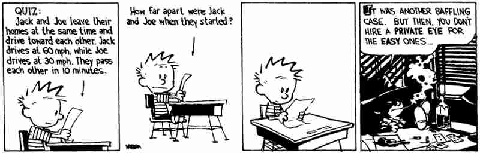

[torna alla pagina principale - back to home page]

| Lunedì | 11h-13h | Aula Volterra - Dip. Matematica | Ed. CU006 |
| Martedì | 8h-11h | Aula Volterra - Dip. Matematica | Ed. CU006 |
| Giovedì | 8h-10h | Aula Volterra - Dip. Matematica | Ed. CU006 |
| Mercoledì | 10h-13h | Aula C | Edificio CU035 |
| Venerdì | 8h-10h | Aula C | Edificio CU035 |
[1] M.BRAMANTI, C.D.PAGANI, S.SALSA, Matematica - Calcolo Infinitesimale e Algebra Lineare, Zanichelli.
| Lunedì | 8h-10h | Aula A - Ed. Cannizzaro | CU014 |
| Martedì | 15h-18h | Aula A - Ed. Cannizzaro | CU014 |
[1] M. BRAMANTI, C.D. PAGANI, S. SALSA, Matematica - Calcolo Infinitesimale e Algebra Lineare, Zanichelli.